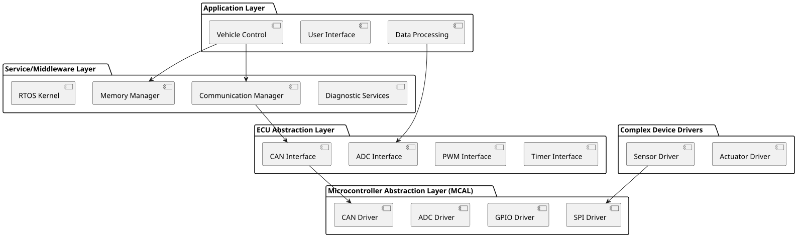
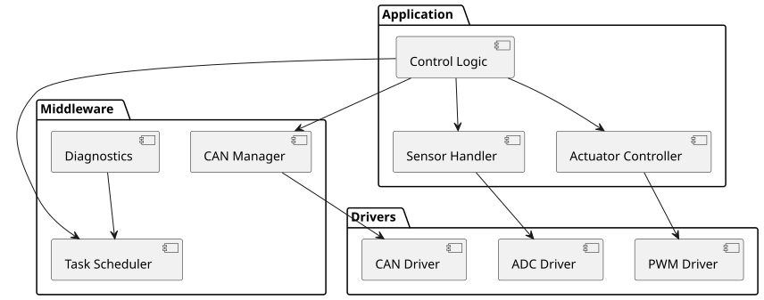
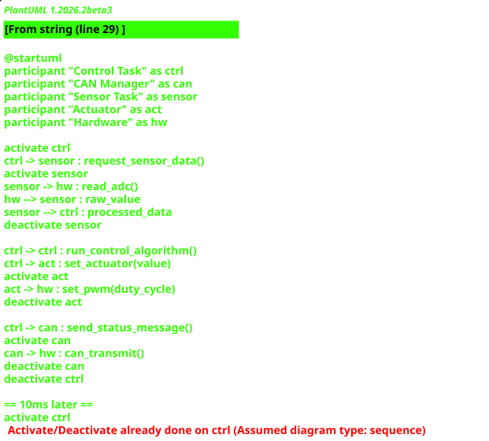
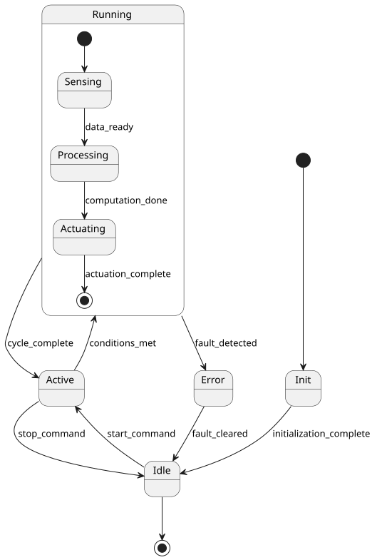
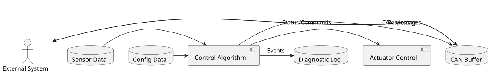
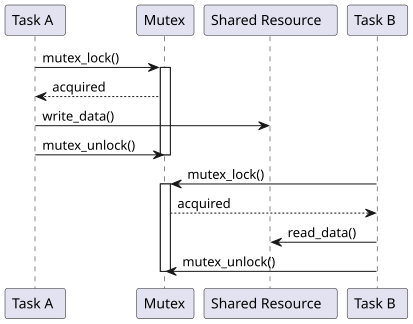
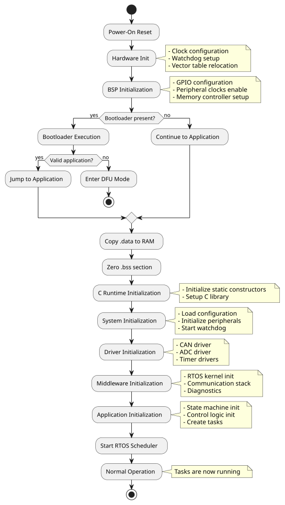
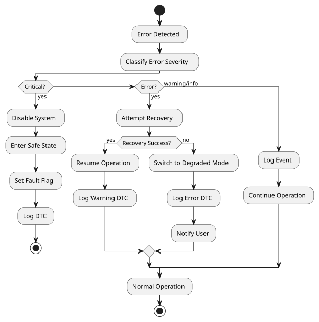

Software Architecture¶
This document consolidates the software architecture of Network Intrusion detection project
Last updated: 08-Feb-2026
Software Architecture Pattern¶
Overall architectural style and design patterns used in the software system.
Architecture Style¶
Pattern: Layered Architecture / Event-Driven / Microkernel / State Machine-based / Hybrid
Description: Brief explanation of the chosen architectural pattern and why it fits this system.
Key Characteristics: - Characteristic 1 (e.g., separation of concerns) - Characteristic 2 (e.g., real-time event processing) - Characteristic 3 (e.g., modularity and reusability)
Architectural Diagram¶
graph TB
subgraph "Application Layer"
A1[Application Module 1]
A2[Application Module 2]
A3[Application Module 3]
end
subgraph "Middleware Layer"
M1[RTOS Services]
M2[Communication Stack]
M3[Diagnostics]
end
subgraph "Driver Layer"
D1[CAN Driver]
D2[SPI Driver]
D3[GPIO Driver]
end
subgraph "BSP Layer"
B1[Hardware Abstraction]
B2[Low-Level Drivers]
end
A1 --> M1
A2 --> M2
A3 --> M1
M1 --> D1
M2 --> D1
M3 --> D2
D1 --> B1
D2 --> B1
D3 --> B2Design Patterns Used¶
- Pattern 1: Observer/Publish-Subscribe for event handling
- Pattern 2: State Machine for control logic
- Pattern 3: Singleton for resource managers
- Pattern 4: Strategy for algorithm selection
- Pattern 5: Factory for object creation
Layer/Module Decomposition¶
Breakdown of software into layers and modules.
Layer Structure¶

Layer Descriptions¶
Application Layer¶
Purpose: Business logic and application-specific functionality
Modules: - Module 1: Vehicle control algorithms - Module 2: User interface management - Module 3: Data processing and filtering
Dependencies: Service layer, ECU abstraction layer
Service/Middleware Layer¶
Purpose: RTOS and common services
Modules: - RTOS Kernel: Task scheduling, synchronization (FreeRTOS/Zephyr/etc.) - Memory Manager: Heap management, buffer pools - Communication Manager: Protocol handling, message routing - Diagnostic Services: Error logging, diagnostics protocol
Dependencies: ECU abstraction layer
ECU Abstraction Layer¶
Purpose: Hardware-independent interface to peripherals
Modules: - CAN Interface: Abstract CAN communication - ADC Interface: Abstract analog input - PWM Interface: Abstract pulse-width modulation - Timer Interface: Abstract timing services
Dependencies: MCAL layer
MCAL (Microcontroller Abstraction Layer)¶
Purpose: Hardware-specific drivers
Modules: - CAN Driver: Low-level CAN controller - ADC Driver: Low-level ADC control - GPIO Driver: Low-level digital I/O - SPI/I2C Driver: Low-level serial communication
Dependencies: Hardware registers
Complex Device Drivers¶
Purpose: External device drivers
Modules: - Sensor Driver: Sensor-specific protocol (e.g., I2C sensor) - Actuator Driver: Actuator control logic
Dependencies: MCAL layer
Component Overview¶
List of major software components and their responsibilities.
| Component Name | Layer | Responsibility | Key Interfaces |
|---|---|---|---|
| Task Manager | Service | Task scheduling, context switching | task_create(), task_delete() |
| CAN Manager | Service | CAN message handling | can_send(), can_receive() |
| State Machine | Application | System state management | sm_transition(), sm_get_state() |
| Sensor Handler | Application | Sensor data acquisition | sensor_read(), sensor_calibrate() |
| Actuator Controller | Application | Actuator control | actuator_set(), actuator_get_status() |
| Diagnostics | Service | Error handling, logging | diag_log_error(), diag_get_dtc() |
| Flash Manager | Service | Non-volatile memory access | flash_write(), flash_read() |
Component Dependencies¶
graph LR
A[State Machine] --> B[CAN Manager]
A --> C[Sensor Handler]
A --> D[Actuator Controller]
C --> E[ADC Driver]
D --> F[PWM Driver]
B --> G[CAN Driver]
A --> H[Diagnostics]
H --> I[Flash Manager]Static View¶
Software package structure, modules, and dependencies.
Package Structure¶
project_root/
├── src/
│ ├── app/
│ │ ├── control/
│ │ │ ├── state_machine.c
│ │ │ └── control_logic.c
│ │ ├── sensors/
│ │ │ └── sensor_handler.c
│ │ └── actuators/
│ │ └── actuator_controller.c
│ ├── middleware/
│ │ ├── rtos/
│ │ ├── comm/
│ │ │ └── can_manager.c
│ │ └── diag/
│ │ └── diagnostics.c
│ ├── drivers/
│ │ ├── can/
│ │ ├── adc/
│ │ ├── gpio/
│ │ └── spi/
│ └── bsp/
│ ├── board_init.c
│ └── system_config.c
├── inc/
│ ├── app/
│ ├── middleware/
│ ├── drivers/
│ └── bsp/
├── config/
│ └── system_config.h
└── tests/
└── unit_tests/
Module Dependencies¶

Key Interfaces and APIs¶
Application APIs¶
// State machine
void sm_init(void);
state_t sm_get_current_state(void);
void sm_transition(event_t event);
// Sensor interface
status_t sensor_init(sensor_id_t id);
float sensor_read(sensor_id_t id);
Middleware APIs¶
// RTOS
task_handle_t task_create(task_func_t func, void* param, priority_t prio);
void task_delay(uint32_t ms);
// CAN Manager
status_t can_send_message(can_msg_t* msg);
status_t can_register_callback(can_id_t id, can_callback_t cb);
Driver APIs¶
// Low-level driver interface
void can_driver_init(can_config_t* config);
void adc_driver_start_conversion(uint8_t channel);
uint16_t adc_driver_get_result(void);
Runtime View¶
Task/thread architecture, execution flow, and real-time scheduling.
Task Architecture¶
| Task Name | Priority | Period/Trigger | Stack Size | Responsibility |
|---|---|---|---|---|
| Control Task | High (3) | 10 ms periodic | 2 KB | Main control loop |
| CAN RX Task | High (2) | Event (CAN msg) | 1 KB | CAN message reception |
| Sensor Task | Medium (5) | 50 ms periodic | 1.5 KB | Sensor data acquisition |
| Diagnostic Task | Low (8) | 100 ms periodic | 1 KB | System monitoring |
| Idle Task | Lowest (15) | Always ready | 512 B | Power management |
Task Scheduling Diagram¶
gantt
title Task Execution Timeline (100ms window)
dateFormat X
axisFormat %L
section Control Task
Run :0, 2
Run :10, 12
Run :20, 22
Run :30, 32
Run :40, 42
Run :50, 52
Run :60, 62
Run :70, 72
Run :80, 82
Run :90, 92
section CAN RX Task
Process :5, 6
Process :25, 26
Process :65, 66
section Sensor Task
Read :0, 4
Read :50, 54
section Diagnostic
Check :0, 3Runtime Sequence¶

State Machine Execution¶

Interrupt Handling¶
sequenceDiagram
participant Hardware
participant ISR
participant Task
participant Scheduler
Hardware->>ISR: Interrupt (e.g., CAN RX)
activate ISR
ISR->>ISR: Save context
ISR->>ISR: Clear interrupt flag
ISR->>Task: Signal semaphore
ISR->>Scheduler: Yield if higher priority
ISR->>ISR: Restore context
deactivate ISR
Scheduler->>Task: Resume execution
activate Task
Task->>Task: Process data
deactivate TaskTiming Constraints¶
| Constraint | Value | Consequence if Violated |
|---|---|---|
| Control loop execution time | < 8 ms | Missed deadline alarm |
| CAN message latency | < 5 ms | Communication timeout |
| Sensor read response time | < 2 ms | Stale data warning |
| Maximum interrupt latency | < 100 µs | Real-time violation |
| Context switch time | < 10 µs | Scheduling overhead |
Data Flow¶
How data moves through the software system.
Data Flow Diagram¶

Data Processing Pipeline¶
graph LR
A[Raw Sensor Data] --> B[Filtering]
B --> C[Scaling/Calibration]
C --> D[Validation]
D --> E[Control Algorithm]
E --> F[Output Limiting]
F --> G[Actuator Commands]
D --> H[Data Logging]
E --> HData Stores¶
| Data Store | Type | Size | Persistence | Purpose |
|---|---|---|---|---|
| Sensor Buffer | Ring buffer | 256 bytes | RAM | Recent sensor values |
| CAN TX Queue | FIFO queue | 512 bytes | RAM | Outgoing CAN messages |
| CAN RX Queue | FIFO queue | 512 bytes | RAM | Incoming CAN messages |
| Configuration | Struct | 128 bytes | Flash | System parameters |
| Calibration Data | Array | 1 KB | Flash | Sensor calibration |
| Diagnostic Log | Ring buffer | 2 KB | Flash | Error history |
Inter-Component Communication¶
Communication mechanisms between software components.
Communication Mechanisms¶
| Mechanism | Use Case | Components Involved | Synchronization |
|---|---|---|---|
| Direct Function Call | Same layer interaction | Control → Sensor Handler | Synchronous |
| Message Queue | Task-to-task async | CAN RX Task → Control Task | Asynchronous |
| Semaphore | Resource protection | Multiple → Flash Manager | Blocking |
| Event Flags | Notification | ISR → Task | Asynchronous |
| Shared Memory | High-speed data | Sensor Task → Control Task | Mutex-protected |
| Callback Functions | Event notification | Driver → Application | Asynchronous |
Communication Patterns¶
Message Queue Example¶
// Producer (CAN RX Task)
can_msg_t msg;
if (can_receive(&msg)) {
queue_send(rx_queue, &msg, TIMEOUT_MS);
}
// Consumer (Control Task)
can_msg_t msg;
if (queue_receive(rx_queue, &msg, TIMEOUT_MS)) {
process_can_message(&msg);
}
Callback Example¶
// Registration
can_register_callback(CAN_ID_CMD, on_command_received);
// Callback implementation
void on_command_received(can_msg_t* msg) {
// Process command
event_flags_set(CMD_EVENT_FLAG);
}
Data Sharing and Protection¶

Memory Architecture¶
Flash and RAM layout, code placement, and memory management.
Memory Map¶
Flash Memory (1 MB)
┌─────────────────────────────────┐ 0x0800 0000
│ Bootloader (64 KB) │
├─────────────────────────────────┤ 0x0801 0000
│ Application Code (768 KB) │
│ - Vector Table │
│ - Application Layer │
│ - Middleware Layer │
│ - Driver Layer │
├─────────────────────────────────┤ 0x080D 0000
│ Calibration Data (128 KB) │
├─────────────────────────────────┤ 0x080F 0000
│ Configuration (32 KB) │
├─────────────────────────────────┤ 0x080F 8000
│ Diagnostic Log (32 KB) │
└─────────────────────────────────┘ 0x0810 0000
RAM Memory (128 KB)
┌─────────────────────────────────┐ 0x2000 0000
│ Stack (16 KB) │
├─────────────────────────────────┤ 0x2000 4000
│ Heap (32 KB) │
├─────────────────────────────────┤ 0x2000 C000
│ .bss (Uninitialized) (16 KB) │
├─────────────────────────────────┤ 0x2001 0000
│ .data (Initialized) (8 KB) │
├─────────────────────────────────┤ 0x2001 2000
│ Task Stacks (24 KB) │
│ - Control Task: 2 KB │
│ - CAN RX Task: 1 KB │
│ - Sensor Task: 1.5 KB │
│ - Others... │
├─────────────────────────────────┤ 0x2001 8000
│ Buffers & Queues (16 KB) │
│ - CAN TX/RX buffers │
│ - Sensor data buffers │
├─────────────────────────────────┤ 0x2001 C000
│ RTOS Kernel Data (16 KB) │
└─────────────────────────────────┘ 0x2002 0000
Linker Section Placement¶
| Section | Memory Region | Size | Purpose |
|---|---|---|---|
.isr_vector |
Flash 0x08000000 | 1 KB | Interrupt vectors |
.text |
Flash | ~500 KB | Application code |
.rodata |
Flash | ~50 KB | Constant data |
.data |
RAM (load from Flash) | 8 KB | Initialized variables |
.bss |
RAM | 16 KB | Uninitialized variables |
.heap |
RAM | 32 KB | Dynamic allocation |
.stack |
RAM | 16 KB | Main stack |
.calibration |
Flash 0x080D0000 | 128 KB | Calibration data |
Memory Budget¶
Flash Usage: - Total available: 1024 KB - Bootloader: 64 KB (6%) - Application code: 768 KB (75%) - Calibration: 128 KB (12.5%) - Configuration: 32 KB (3%) - Diagnostic log: 32 KB (3%) - Reserved/Free: 0 KB (0%)
RAM Usage: - Total available: 128 KB - Stack: 16 KB (12.5%) - Heap: 32 KB (25%) - Static data (.bss + .data): 24 KB (18.75%) - Task stacks: 24 KB (18.75%) - Buffers: 16 KB (12.5%) - RTOS: 16 KB (12.5%) - Free: ~0 KB
Memory Management Strategy¶
Static Allocation: - All task stacks: compile-time sized - Critical buffers: statically allocated - No fragmentation risk
Dynamic Allocation: - Heap used sparingly for non-critical objects - Memory pools for fixed-size objects - Diagnostics: heap usage monitoring
Memory Protection (if MPU available): - Region 1: Flash (read-only, executable) - Region 2: RAM (read-write, non-executable) - Region 3: Peripherals (read-write, non-executable) - Region 4: Stack guard (no access)
Boot Sequence¶
System initialization and startup flow.
Boot Flow Diagram¶

Initialization Sequence Details¶
Stage 1: Hardware Initialization (Reset Handler)¶
void Reset_Handler(void) {
// 1. Copy .data section from Flash to RAM
memcpy(&_sdata, &_sidata, &_edata - &_sdata);
// 2. Zero .bss section
memset(&_sbss, 0, &_ebss - &_sbss);
// 3. Call system init
SystemInit();
// 4. Jump to main
main();
}
Stage 2: System Initialization¶
void SystemInit(void) {
// Clock configuration (PLL, AHB, APB)
clock_config();
// Enable FPU (if applicable)
fpu_enable();
// Configure vector table offset
SCB->VTOR = FLASH_BASE;
// Enable fault handlers
fault_handlers_enable();
}
Stage 3: BSP Initialization¶
void bsp_init(void) {
// GPIO initialization
gpio_init();
// Enable peripheral clocks
peripheral_clocks_enable();
// External memory controller (if used)
memory_controller_init();
}
Stage 4: Driver Initialization¶
void drivers_init(void) {
can_driver_init(&can_config);
adc_driver_init(&adc_config);
timer_driver_init(&timer_config);
spi_driver_init(&spi_config);
// ... other drivers
}
Stage 5: Application Initialization¶
int main(void) {
// Load configuration from Flash
config_load();
// Initialize middleware
rtos_init();
can_manager_init();
diagnostics_init();
// Initialize application components
state_machine_init();
sensor_handler_init();
actuator_controller_init();
// Create RTOS tasks
task_create(control_task, NULL, HIGH_PRIORITY);
task_create(sensor_task, NULL, MEDIUM_PRIORITY);
task_create(diagnostic_task, NULL, LOW_PRIORITY);
// Start scheduler (never returns)
rtos_start_scheduler();
// Should never reach here
while(1);
}
Initialization Timing¶
| Stage | Duration | Notes |
|---|---|---|
| Reset to SystemInit | ~100 µs | Hardware-dependent |
| Clock configuration | ~5 ms | PLL stabilization |
| BSP initialization | ~10 ms | GPIO, peripherals |
| Driver initialization | ~20 ms | CAN, ADC, timers |
| Application init | ~50 ms | Config load, RTOS setup |
| Total boot time | ~85 ms | To scheduler start |
Watchdog Handling During Boot¶
- Watchdog started early in boot
- Periodic kicks during long initialization
- Fully handed over to application after boot
Error Handling Strategy¶
System-wide approach to error detection, reporting, and recovery.
Error Classification¶
| Error Level | Severity | Example | Response |
|---|---|---|---|
| Critical | ASIL-D | Sensor total failure | Enter safe state, disable system |
| Error | ASIL-B | CAN communication timeout | Switch to backup, log DTC |
| Warning | ASIL-A | Sensor value out of range | Use default, log warning |
| Info | QM | Configuration updated | Log event |
Error Detection Mechanisms¶
Hardware-Level: - Watchdog timer (independent) - Memory parity/ECC (if available) - Clock monitoring (LSI/HSE failure detection) - Stack overflow detection - Peripheral error flags
Software-Level: - Return code checking - Plausibility checks on sensor data - Timeout monitoring on communication - Sequence number validation - CRC/checksum verification - Range checking on inputs
Error Handling Flow¶

Error Recovery Strategies¶
| Error Type | Recovery Strategy | Fallback |
|---|---|---|
| CAN timeout | Retry 3 times, then use last valid | Enter limp mode |
| Sensor failure | Use redundant sensor or default | Safe state |
| Memory corruption | Reset affected subsystem | Full system reset |
| Task watchdog violation | Reset task, log event | System reset if repeated |
| Configuration error | Load defaults | Halt if critical |
Diagnostic Trouble Codes (DTC)¶
typedef enum {
DTC_NO_ERROR = 0x0000,
// Communication errors (0x1xxx)
DTC_CAN_BUS_OFF = 0x1001,
DTC_CAN_TIMEOUT = 0x1002,
// Sensor errors (0x2xxx)
DTC_SENSOR_1_FAULT = 0x2001,
DTC_SENSOR_OUT_OF_RANGE = 0x2002,
// Actuator errors (0x3xxx)
DTC_ACTUATOR_FAULT = 0x3001,
// System errors (0x4xxx)
DTC_WATCHDOG_RESET = 0x4001,
DTC_STACK_OVERFLOW = 0x4002,
DTC_MEMORY_CORRUPTION = 0x4003,
} dtc_code_t;
Error Logging¶
Log Entry Format:
typedef struct {
uint32_t timestamp; // System time
dtc_code_t dtc; // Error code
uint8_t severity; // Critical/Error/Warning/Info
uint32_t context[4]; // Context-specific data
} error_log_entry_t;
Log Storage: - Ring buffer in Flash (2 KB, ~50 entries) - Persistent across resets - Accessible via diagnostics interface
Safe State Definition¶
Safe State Actions: 1. Disable all actuators (set to known safe position) 2. Set safe state flag in persistent memory 3. Enable error LED/indicator 4. Log critical error with context 5. Wait for manual reset or external intervention
Recovery from Safe State: - Requires explicit user action or diagnostic command - Verify error condition cleared - Perform self-test before resuming
Key Design Decisions¶
Major software architectural choices and rationale.
Decision 1: RTOS Selection¶
Context: Need for multitasking and real-time scheduling
Decision: Use FreeRTOS / Zephyr / Custom RTOS
Rationale: - Proven in automotive applications - Small footprint suitable for resource-constrained MCU - Active community and support - Permissive license - Pre-certified for safety (if applicable)
Consequences: - Task-based architecture required - Additional RAM overhead for task stacks - Deterministic scheduling achieved
Trade-offs: - Learning curve for team - Slightly increased complexity vs. bare-metal
Decision 2: Communication Protocol¶
Context: Inter-ECU communication requirement
Decision: Use CAN bus with custom protocol / CANopen / J1939
Rationale: - Industry standard for automotive - Robust error detection - Broadcast and multicast support - Wide hardware support
Consequences: - Need CAN transceiver hardware - Protocol stack implementation required - Bandwidth limitations (500 kbps / 1 Mbps)
Trade-offs: - Higher latency vs. point-to-point - Limited payload (8 bytes per message)
Decision 3: Memory Management¶
Context: Embedded system with limited RAM
Decision: Primarily static allocation with limited heap
Rationale: - Deterministic behavior - No fragmentation risk - Predictable memory footprint - Easier certification for safety
Consequences: - Less flexibility at runtime - Careful planning of buffer sizes required - Some dynamic allocation for non-critical features
Trade-offs: - May waste some memory vs. dynamic - Configuration changes require recompilation
Alternative Design Decisions¶
Software architecture alternatives evaluated and rejected.
Alternative 1: Bare-Metal (No RTOS)¶
Description: Implement super-loop with interrupt-driven I/O instead of RTOS
Pros: - Simpler, more predictable - Lower memory overhead - Easier debugging - No licensing concerns
Cons: - Harder to manage complex timing requirements - Difficult to add new features - Manual scheduling and prioritization - Scalability issues as complexity grows
Reason for Rejection: System has multiple concurrent activities with different priorities and timing constraints. RTOS provides better separation of concerns and maintainability.
When to Reconsider: If system becomes very simple with only 1-2 periodic tasks and minimal event handling.
Alternative 2: Event-Driven Architecture Only¶
Description: Pure event-driven system with event queue and handlers
Pros: - Very responsive to events - Lower context-switching overhead - Simpler state management - Good for highly asynchronous systems
Cons: - Harder to guarantee timing for periodic tasks - Complex priority management - Potential for event queue overflow - Debugging event chains is difficult
Reason for Rejection: System has both periodic control loops and asynchronous events. Hybrid approach (RTOS with event flags) provides better balance.
When to Reconsider: If system becomes predominantly event-driven with few periodic requirements.
Alternative 3: Dynamic Memory Allocation¶
Description: Use heap extensively for buffers, objects, and data structures
Pros: - Flexible resource allocation - Can adapt to varying workload - Less upfront memory planning - Easier to implement variable-size structures
Cons: - Fragmentation risk in long-running system - Non-deterministic allocation time - Harder to prove safety properties - Potential for memory leaks
Reason for Rejection: Safety-critical automotive application requires deterministic behavior and predictable memory usage. Static allocation eliminates fragmentation and allocation failures.
When to Reconsider: If system moves to more powerful processor with MMU and is no longer safety-critical.
Notes and References¶
Development Tools¶
- Compiler: GCC ARM / Keil MDK / IAR EWARM
- IDE: STM32CubeIDE / VSCode / Eclipse
- Debugger: ST-Link / J-Link / OpenOCD
- Static Analysis: PC-Lint / Coverity / SonarQube
- Version Control: Git
Coding Standards¶
- MISRA C:2012 compliance
- AUTOSAR Coding Guidelines (if applicable)
- Project-specific naming conventions
- Doxygen documentation format
Related Documentation¶
- System Architecture Document
- Component Detailed Design Documents
- Software Requirements Specification
- Interface Control Documents
- Test Specification
Revision History¶
| Version | Date | Author | Changes |
|---|---|---|---|
| 0.1 | YYYY-MM-DD | [Name] | Initial draft |